参考源输入
外部参考时钟进入 LMK04828，作为后级采样时钟和同步信号的基准。
硬件设计
ADDA 子卡的硬件整体设计围绕三条主线展开：用低抖动时钟保证采样基准，用分层电源树支撑多芯片稳定工作，用 JESD204B 高速链路完成 AD/DA 与 FPGA 之间的数据传输。
高速 AD/DA 的采样质量首先取决于时钟质量。板卡以 LMK04828 为时钟核心，对参考源进行清理和频率合成，再向 ADC、DAC、FPGA 和 JESD204B 同步链路分配器件时钟与 SYSREF。
外部参考时钟进入 LMK04828，作为后级采样时钟和同步信号的基准。
PLL1 清理参考时钟，PLL2 进行低噪声频率合成，降低采样时钟抖动。
通过 SYSREF 与器件时钟配合，实现 ADC、DAC 与 FPGA 的 JESD204B 确定性同步。
DCLK 主要承担器件时钟，SDCLK 主要承担 SYSREF/参考同步。各路输出按器件分组，保证 ADC、DAC 与 FPGA 使用同一时钟源下的同步基准。
| LMK 输出 | 连接对象 | 作用 |
|---|---|---|
DCLKout2 / SDCLKout3 |
ADCLK1 / ADREF1 | 送往第一片 ADC。DCLKout2 提供采样器件时钟，SDCLKout3 提供与 JESD204B 对齐相关的 SYSREF/同步参考。 |
DCLKout4 / SDCLKout5 |
ADCLK2 / ADREF2 | 送往第二片 ADC。两片 ADC 分别获得独立的器件时钟与同步参考，便于多通道采样保持确定性相位关系。 |
DCLKout12 / SDCLKout13 |
DACLK / DAREF | 送往 DAC。DCLKout12 作为 DA 转换时钟，SDCLKout13 作为 DAC 侧 SYSREF/同步参考，使回放链路与采集链路处于统一时钟体系。 |
DCLKout8 |
FPGACLK | 送往 FPGA 逻辑侧，作为 JESD204B core clock 以及板上时钟存在性监测的重要参考。 |
SDCLKout9 |
GTX REF | 送往 FPGA 高速收发器参考时钟端，支撑 JESD204B 高速 lane 的串行收发。 |
DCLKout0 |
FB | 接入反馈链路，用于 LMK04828 内部锁相与相位校准，帮助双环 PLL 建立稳定、低抖动的输出基准。 |
SDCLKout1 |
FPGAREF | 送往 FPGA 侧参考网络，作为系统同步与参考时钟体系的一部分。 |
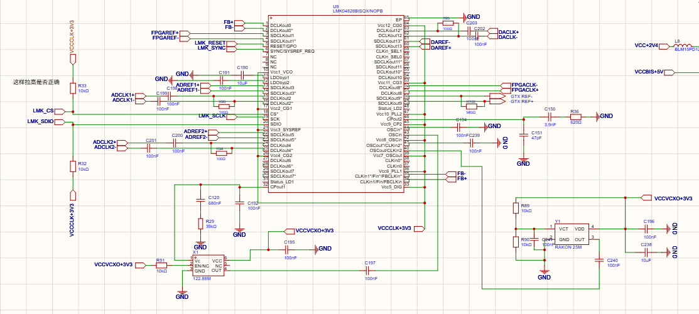
板卡电源采用 DCDC + LDO 的两级供电思路：前级 DCDC 负责高效率降压和提供主要功率，后级 LDO 负责低噪声稳压和电源净化。这样既能控制功耗和发热，又能满足 ADC、DAC、时钟芯片对低噪声电源的要求。
DCDC 转换效率高，适合从输入电源生成主要中间电压，承担较大的电流需求；缺点是开关纹波相对更明显。
LDO 输出噪声低、纹波抑制能力好，适合给 ADC、DAC 和时钟等敏感电源域做二次净化；缺点是效率受压差影响。
板上先生成中间电源，再根据模拟、数字、时钟和接口电源域分别稳压、滤波和去耦。
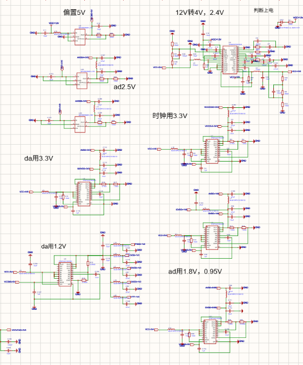
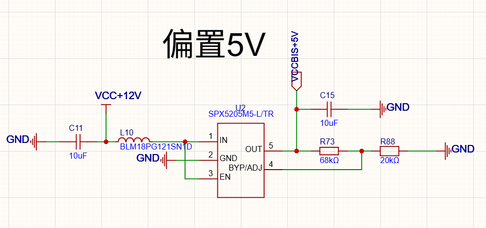
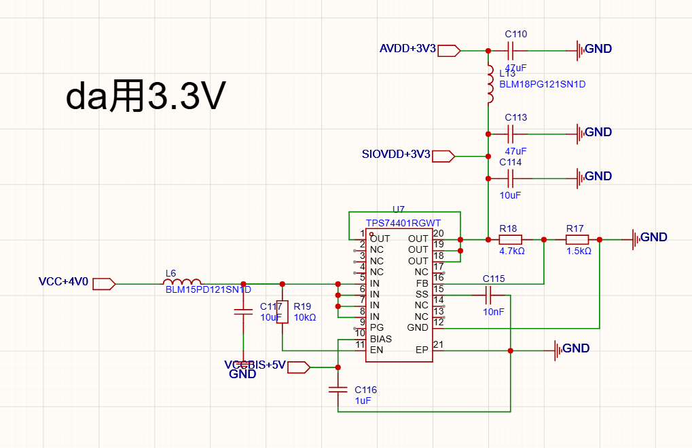
AD/DA 与 FPGA 之间的数据量大、速率高，因此采用 JESD204B 高速串行接口。AD 方向将采样数据送入 FPGA，DA 方向由 FPGA 输出数字波形数据，双向链路共同构成采集与回放通道。
用高速串行 lane 替代大量并行数据线，降低引脚和布线压力。
AD 到 FPGA、FPGA 到 DA 均采用 8 lane 承担高速数据传输。
关键 lane 采用差分、等长和参考地连续设计，保障链路稳定性。
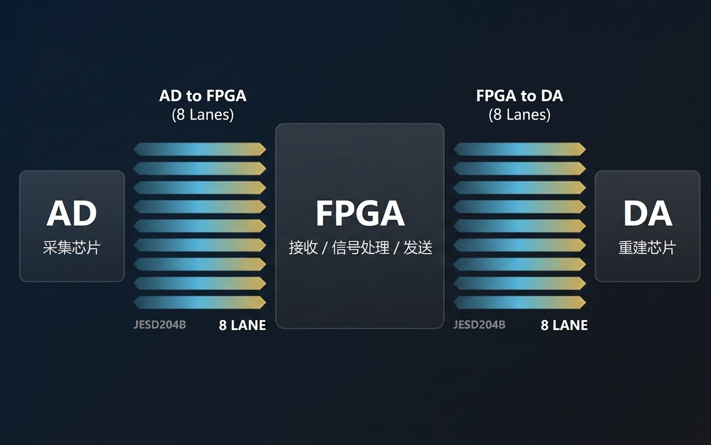
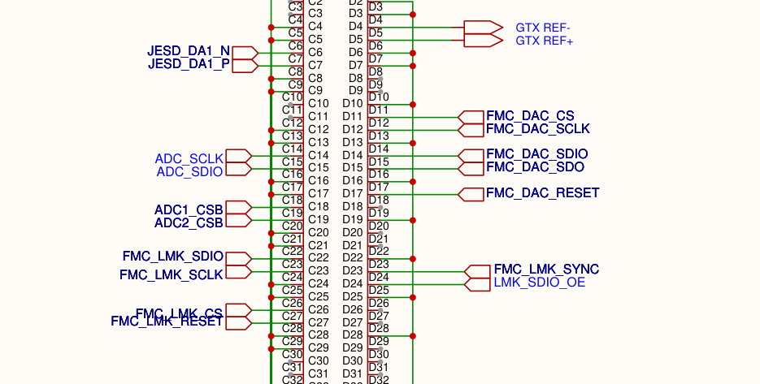
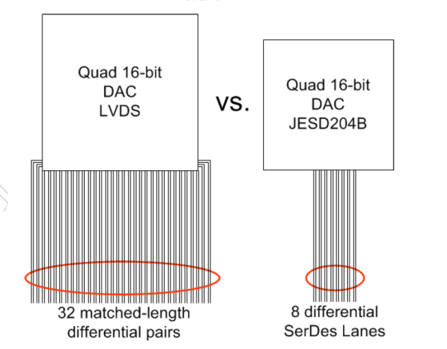
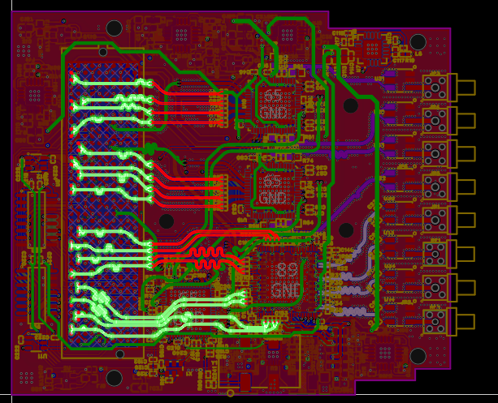
在整体框架确定后，板卡优化主要围绕时钟走线、散热结构和电源布局展开，目标是在有限板面内进一步降低损耗、改善热环境并提升电源稳定性。
指导老师齐美彬教授为本项目提供了大量优化思路，下面开始介绍我团队针对初版的优化工作。
初版时钟走线采用 DCLKout6 和 SDCLKout7，这两个引脚距离 AD 芯片较远，长距离走线容易引入衰减和干扰。团队将时钟输出调整到 DCLKout12 和 SDCLKout13，使关键时钟网络更靠近目标芯片。
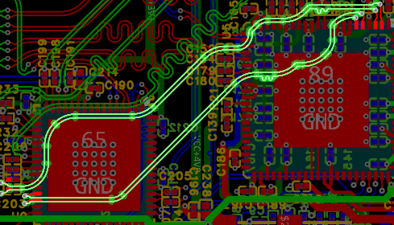
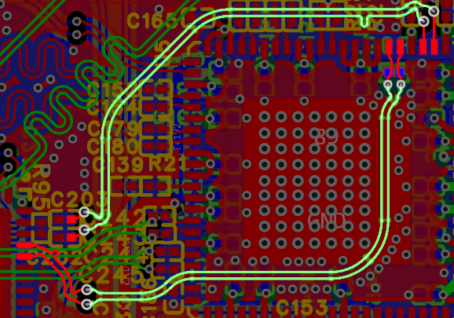
子板运行时局部发热明显，团队针对主要热源设计散热片安装位置，并使用 SolidWorks 完成散热片结构建模，再联系商家定制实物。散热片通过定位孔与板卡结构配合，提升长时间运行时的热稳定性。
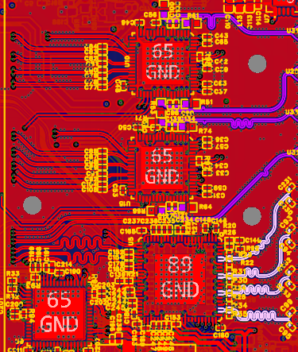
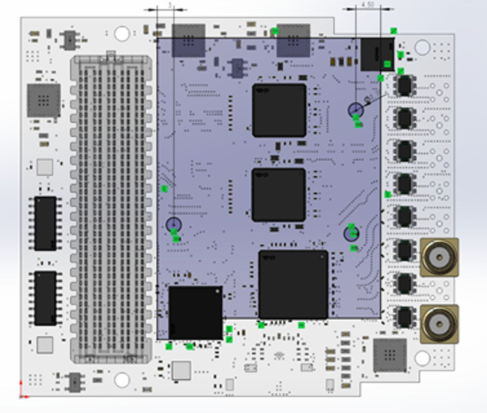
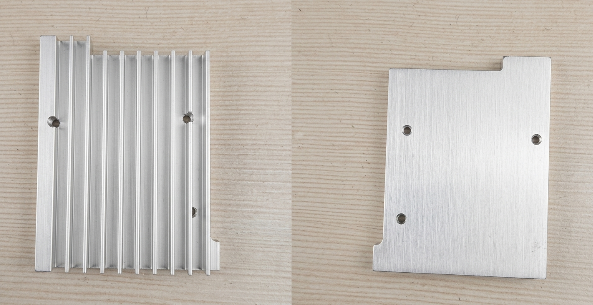
初版 DCDC 外围布局相对分散，功率回路、输入输出电容和反馈网络的摆放不够紧凑。参考 TI 官方评估思路后，团队重新整理 DCDC 芯片周边布局，缩短关键回路，优化电容靠近程度和走线方向。
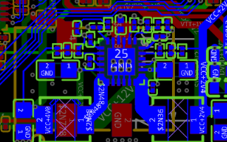
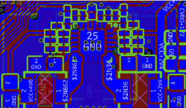